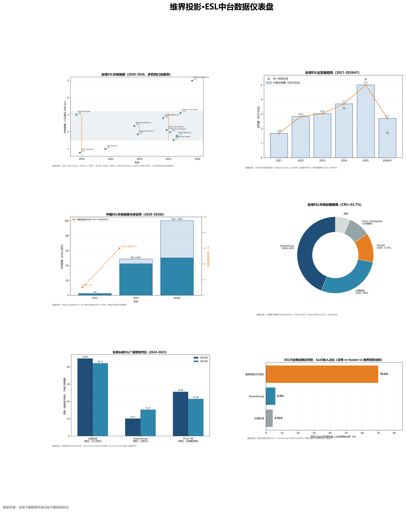
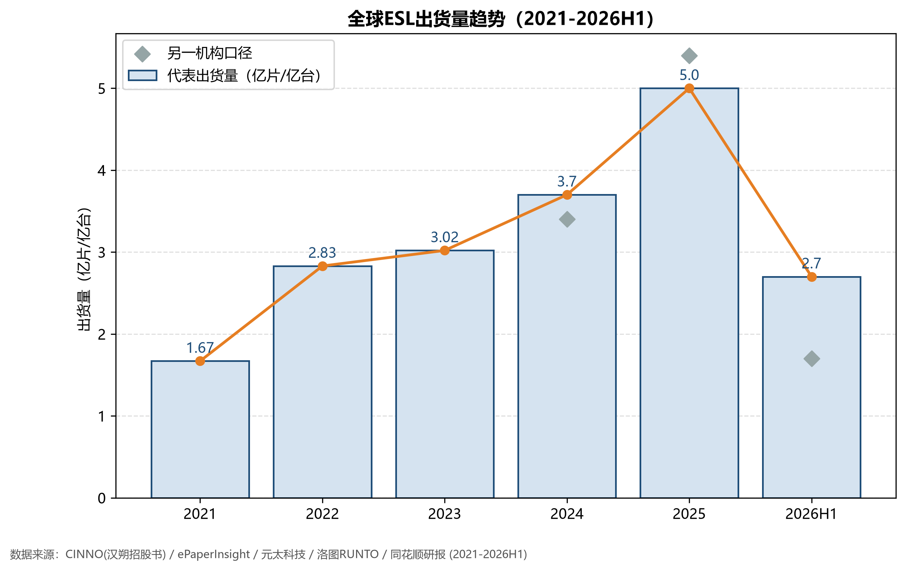
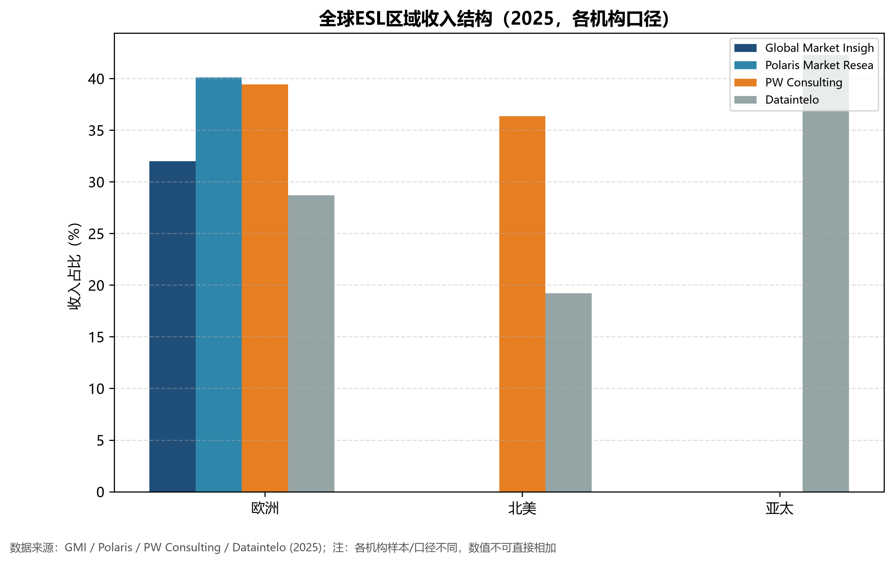
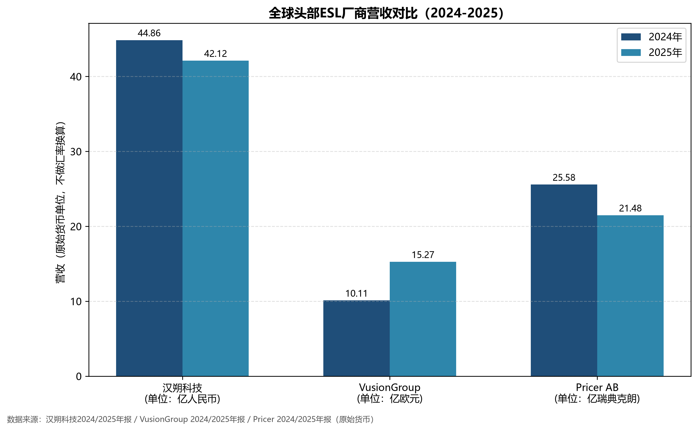
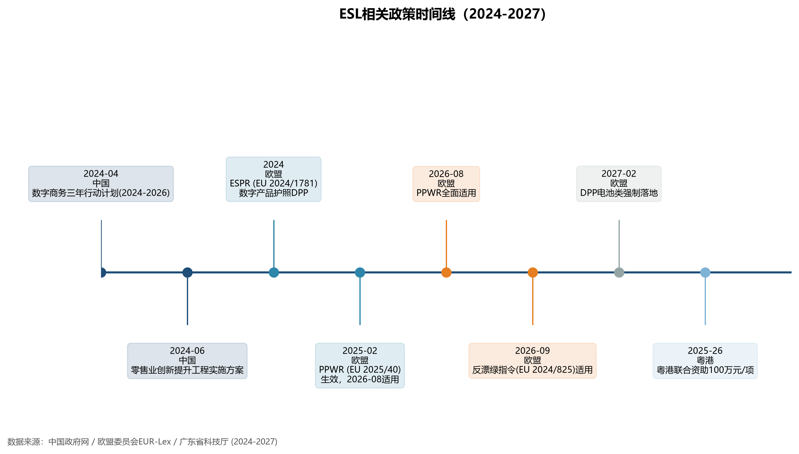
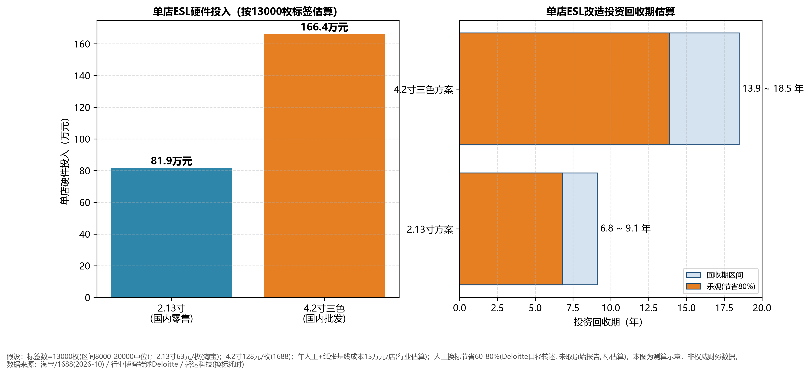

用真实市场数据反推电子价签中台开发方向

01执行摘要
本报告以 2026-10-24 采集的公开权威数据（财报、招股书、政府官网、行业研究机构）为基础，对维界投影"中立 ESL 中台"定位进行外部数据验证。核心结论如下：
- 市场真实存在但远非"千亿级"。2025 年全球 ESL 市场规模约 15–28 亿美元（GMI 28 亿 / Grand View 21 亿 / Mordor 19.7 亿美元，2025），2030 年主流预测约 33–44 亿美元；项目 PPT 所称"2025 年 58 亿、2030 年 200 亿美元"无权威出处，疑似把整个电子纸终端市场（62 亿美元，ePaperInsight）误作 ESL 单一市场。
- 出货量高速增长是真实信号。全球 ESL 出货量从 2021 年 1.67 亿片增至 2025 年约 5.0–5.4 亿片（CINNO、ePaperInsight、洛图科技），2019–2025 历史 CAGR 约 35%；但这是"片数"脉冲，受沃尔玛大单影响，不等于金额增速。
- 竞争高度集中，且头部"硬件绑定、协议封闭"。CR5 合计约 93.7%（GMI，2025）；Vusion 约 44%（2024）、汉朔约 28%（2023）、SOLUM 约 12.3%。汉朔软件/SaaS 收入占比仅 4.33%（2025 年报），Vusion 经常性服务约占 6%（2024 AMF 文件）——全行业仍以硬件销售为主，"中立多品牌管理中台"确属空白。
- 下游已释放真实需求信号。永辉超市 2024–2026 电子价签采购招标明确要求"终端价签通讯须开放接口"（永辉官网招标公告）；沃尔玛美国 2,300 家门店官方口径部署数字价签（Walmart 官方，2024-06/2026-03）；家乐福 2026-02 与 Vusion 签战略合作（Vusion 官网）。
- 出海与国内渗透双线成立。按收入计欧洲为第一大市场（32–40%，GMI/Polaris），亚太增速最快（CAGR 约 14.7%，MarketsandMarkets）；中国商超渗透率 2024 年已近 30%、一二线超 60%（搜狐/天波科技转述），三四线仍有约 15%，下沉空间明确。
- 政策是催化剂而非直接指令。中国《数字商务三年行动计划（2024—2026）》（商务部，2024-04）推动商贸数字化，但原文未直接出现"电子价签"四字；欧盟 PPWR（EU 2025/40）2026-08 适用、反漂绿指令（EU 2024/825）2026-09 适用，构成绿色零售合规驱动。
02研究方法与数据说明
2.1 采集口径与可信度分级
全部数据采集于 2026-10-24，来源覆盖：政府/监管官网（中国政府网、EUR-Lex、商务部、广东省科技厅）、上市公司一手披露（汉朔科技深交所年报、Vusion 官网年报、Pricer 年报）、行业研究机构（GMI、Grand View、Mordor、CINNO、ePaperInsight、洛图科技、MarketsandMarkets）与企业官网案例（沃尔玛、家乐福、永辉招标）。
| 可信度等级 | 判定标准 | 报告标注方式 |
|---|---|---|
| verified | 两个以上独立来源一致，或权威一手来源（财报/招股书/政府官网） | 正文括号注明机构名+年份 |
| estimate | 媒体转述、有依据推算或第三方报告 | 标注"估算"并附来源 |
| uncertain | 未找到确切出处，或来源间自相矛盾 | 标注"待核实"，不写入结论 |
2.2 口径差异说明
- 出货量（片数）vs 市场规模（金额）：出货量受沃尔玛脉冲订单影响波动大；市场规模含硬件+SaaS+服务，更平滑。两者不可互相推算（如"5 亿片"不能推出"58 亿美元"）。
- 收入口径区域归属：Dataintelo 认为亚太按收入占比 42.3% 为最大市场；GMI/Polaris 认为欧洲 32–40% 为最大市场。差异源于是否把沃尔玛美国订单计入北美、是否把中国模组制造出货计入亚太收入。本报告同时引用两个口径。
- 渗透率：按"已部署 ESL 的零售门店数占比"统计，不是按标签数或零售额。
2.3 数据修正对照表（本报告核心素养章）
项目 PPT 自述数字与权威数据不符处，逐条并列如下——这是数据分析工作中"用外部数据校验项目叙事"的关键环节。
| 指标 | PPT 原值 | 权威核实值（建议口径） | 来源 |
|---|---|---|---|
| 2025 全球 ESL 市场规模 | 58 亿美元 | 15–28 亿美元区间（2025） | GMI / Grand View / Mordor / TBRC，2025 |
| 2030 全球 ESL 市场预测 | 突破 200 亿美元 | 约 33–44 亿美元区间（2030） | The Business Research Company / Research&Markets |
| 2021 全球出货量 | 1.9 亿片 | 1.67 亿片（偏差约 14%） | CINNO（汉朔招股书引用） |
| 亚太增速 CAGR | CAGR 超 35% | 35% 为 2019–2025 全球出货历史 CAGR；亚太未来 CAGR 约 14.7%–22% | ePaperInsight / MarketsandMarkets / Grand View |
| 中国 ESL 渗透率 | 不足 10%（2026 升至 20%） | 商超口径 2024 年已近 30%，一二线超 60% | 搜狐/天波科技转述 GMI |
| 中国市场规模 | 超 120 亿元 | 2025 年约 42–49 亿元；2026E 约 50–100 亿元 | 豆丁网行业报告（estimate，多份区间） |
| 《数字商务三年行动计划》年份 | 2025–2027 / 要求"电子价签与 ERP 深度集成" | 实际为 2024—2026；原文未出现"电子价签"四字，属行业引申 | 中国政府网政策库，2024-04-28 |
| "2026 渗透率破 68.4%" | 68.4% | 无权威出处，仅豆丁内容农场（且同一数字在不同报告含义自相矛盾），已弃用 | 汉朔投资评级：2023 全球约 15%（反证） |
03全球 ESL 市场：规模与增长
按金额计，2025 年全球 ESL 市场主流机构口径落在 15–28 亿美元：GMI 28 亿美元（2025）并预计 2035 年达 102.8 亿美元（CAGR 13.9%）；Grand View 21 亿美元（2025）；Mordor 19.7 亿美元（2025），2030 年 37.8 亿美元；TBRC 15.2 亿美元（2025），2030 年 33.3 亿美元。各机构因"窄口径（仅硬件+软件）/ 宽口径（含系统集成与通信模组）"不同而差异明显。

出货量侧，全球 ESL 从 2021 年 1.67 亿片增至 2024 年约 3.7 亿台（ePaperInsight）、2025 年约 5.0 亿台（ePaperInsight，合力泰 2025 年报引用）/ 5.4 亿片（洛图科技，同比 +88%）。2026 上半年因沃尔玛订单收尾，洛图口径约 1.7 亿片（同比下滑），同花顺研报口径约 2.7 亿片（同比 +19.3%）——口径差异并存。

04区域市场结构
按收入计，欧洲是第一大市场：GMI 口径 32.0%、Polaris 40.1%、PW Consulting 39.4%（2025）。这与维界项目已落地德国 KATAG、荷兰 Bouwkern 的客户结构一致——欧洲零售商对合规（PPWR/反漂绿）和多品牌开放度要求更高，是中台服务的天然付费区。

亚太增速最快：MarketsandMarkets 口径亚太市场 38.47 亿（2024）→ 76.41 亿美元（2029），CAGR 约 14.7%，快于全球 12.3%；Grand View 口径亚太 63.49 亿（2025）→ 227.96 亿美元（2033），CAGR 17.7%。Dataintelo 则认为亚太按收入占比 42.3% 为最大市场。
欧洲（收入第一大市场）
来源：GMI / Polaris，2025
亚太（增速最快）
来源：MarketsandMarkets，2025
05中国市场
中国 ESL 市场 2022 年仅约 2.4 亿元（ePaperInsight，出货约 600 万台），2025 年约 42.3–48.7 亿元（豆丁网多份行业报告，estimate），2026E 预测区间约 50.2–100.2 亿元。PPT 所称"超 120 亿元"无权威出处。

渗透率侧：中国商超 ESL 渗透率 2020 年不足 5% → 2024 年近 30%（商超口径），其中一二线城市超 60%、三四线约 15%（搜狐/天波科技转述 GMI；证券时报）。横向看，法国渗透率 50–60% 为全球最高，欧美发达国家按门店数口径仍不足 30%（洛图科技）。

06竞品格局与市占
全球 ESL 市场高度集中：前五大厂商（Vusion、汉朔、SOLUM、Pricer、Displaydata）合计约 CR5 = 93.7%（GMI，2025）。其中 Vusion 约 44%（2024，中国电子视像行业协会报告，受益沃尔玛订单）、汉朔约 28%（2023，CINNO，中国市占约 62%）、SOLUM 约 12.3%（2025，ReportMines 估算）。

营收侧（保留原始货币，不做汇率换算）：
| 厂商 | 2024 营收 | 2025 营收 | 商业模式特征 |
|---|---|---|---|
| VusionGroup（泛欧巴黎） | 调整后 10.105 亿欧元（+25%） | 调整后 15.27 亿欧元（+51%） | 硬件+EdgeSense/Captana 云平台，正转型 Retail IoT |
| 汉朔科技（301275.SZ） | 44.86 亿元（+18.84%） | 42.12 亿元（-6.12%） | 电子价签终端占 92.33%，软件/SaaS 仅 4.33% |
| Pricer AB（纳斯达哥德堡） | 25.58 亿瑞典克朗 | 21.48 亿瑞典克朗（继续下滑） | 光学 ESL，纯硬件占比高，盈利承压 |

07产业链分析

7.1 上游：电子纸模组高度集中
元太科技（E Ink）在电子纸整体市占 90–95%（2025–2026，电子工程专辑/江苏省政府口径）；但需注意，该数字主要是阅读器/消费电子口径，商业 ESL 电子纸领域存在第二名厂商（港股招股书 CIC 口径 20.8%，推测为兴泰科技）。通信芯片侧主流为 Nordic nRF52833/52832 蓝牙 SoC，蓝牙 5.4 起定义 ESL 服务与 PAwR 标准，推动多设备互通。
7.2 中游：硬件厂商林立，"中立中台"是空白
中游硬件端已有 Vusion/汉朔/Pricer/SOLUM/京东方等成熟玩家，但跨品牌统一管理的中立中台在公开市场中几乎不存在——汉朔云平台、京东方方案均未公开证明兼容第三方硬件；涂鸦智能/阿里云 IoT/AWS 亦未找到面向 ESL 的多品牌中台公开数据（待核实）。
7.3 下游：连锁零售客户基本盘
- 沃尔玛（美国）：2024-06 官方宣布扩展数字价签至 2,300 家门店（2026 年前），2026-03 已约 2,300 家使用（Walmart 官方）。
- 家乐福：2026-02 与 Vusion 签战略协议，"Carrefour 2030"计划内将法国全部大卖场/超市货架数字化（Vusion 官网/PR Newswire）。
- 中国连锁百强：2024 年销售 2.13 万亿元（+4.9%），门店总数 25.72 万个（+13.5%）（CCFA/新华网/央视）。
08政策驱动

8.1 中国：数字商贸数字化
《数字商务三年行动计划（2024—2026 年）》由商务部等部门于 2024-04-28 发布，含 5 项行动 20 条举措。需如实说明：该行动计划原文未直接出现"电子价签"四字，相关表述为"确认一批智慧商圈、智慧商店""指导商品市场开展数字化改造和智能化升级"。PPT 所称"明确电子价签与 ERP 深度集成的技术要求"属行业引申，应改写为"智慧商圈/商店数字化改造为电子价签提供政策空间"。
此外，粤港科技创新联合资助专题（广东省科技厅+香港创新科技署）对广东创新主体每项事前一次性资助 100 万元，实施周期 2 年；申报主体须为广东创新主体联合香港合作伙伴，港科大（广州）为合作通道。
8.2 欧盟：绿色合规组合拳
| 法规 | 适用时间 | 对 ESL 的影响 |
|---|---|---|
| PPWR 包装与包装废弃物法规（EU 2025/40） | 2026-08-12 起全面适用 | 推动零售商包装数据化、减塑，纸质价签/包装可被电子价签替代 |
| 反漂绿指令 ECGT（EU 2024/825） | 2026-09-27 起适用 | 禁止未经证实的笼统环保声明，要求店内环保/价格信息"实时、可核验" |
| ESPR 数字产品护照 DPP（EU 2024/1781） | 电池类 2027-02 起 | ESL 可作为 DPP 信息的店内载体（间接利好） |
09客户画像与付费能力
核心付费客户基本盘：中国连锁 Top100 销售 2.13 万亿元（2024，+4.9%）、门店 25.72 万个（+13.5%）；其中商超类为 ESL 核心客群（综合零售 46 家、超市 23 家）。沃尔玛中国 2024 年销售额 1588.45 亿元，蝉联百强榜首。
9.1 单签价格（2026-10 采集）
| 规格 | 价格 | 来源 |
|---|---|---|
| 2.13 寸 ESL（国内零售） | 约 63 元/枚 | 淘宝（2026-10） |
| 4.2 寸三色 ESL（国内批发） | 约 128 元/枚 | 1688（2026-10） |
| 2.13 寸 ESL（国际批发） | 0.85–1.15 美元/枚 | Made-in-China |
| 4.2 寸 ESL（国际零售） | 16.6–18.8 美元/枚 | Alibaba |
9.2 单店改造 ROI 测算（估算）

| 假设参数 | 取值 | 说明 |
|---|---|---|
| 单店标签数 | 13,000 枚 | 区间 8000–20000 取中位 |
| 2.13 寸方案硬件投入 | 81.9 万元 | 13000 × 63 元 |
| 4.2 寸三色方案硬件投入 | 166.4 万元 | 13000 × 128 元 |
| 年人工+纸张基线成本 | 15 万元/店 | 行业估算（无权威报告） |
| 年节省金额 | 9–12 万元 | 15 × 60% / 15 × 80% |
| 回收期（2.13 寸） | 6.8–9.1 年 | 估算 |
| 回收期（4.2 寸） | 13.9–18.5 年 | 估算 |
10商业模式与财务验证
维界采用"硬件销售 + SaaS 订阅"模式，定位"不做硬件绑定的中立中台服务商"，SaaS 订阅分基础版/运营版/定制版三档（按点位数量+功能版本分级）。项目自述 SaaS 订阅收入占总营收 70% 以上。

| 对象 | SaaS/软件收入占比 | 说明 |
|---|---|---|
| 汉朔科技（2025） | 4.33% | 软件/SaaS/技术服务 1.83 亿元；电子价签终端占 92.33% |
| VusionGroup（2024） | 约 6% | 经常性服务 5740 万欧元，占 VAS 的 54% |
| 维界投影（目标） | 70%+ | 项目自述目标，非行业现状，与同业差异极大 |
10.1 项目融资结构（项目自述）
| 项目 | 内容 |
|---|---|
| A 轮融资核心条款 | 投后估值 ¥750 万 ｜ 出让股权 20% ｜ 团队绝对控股 70% |
| 资金来源结构 | 主营业务回款 55% ｜ 广东天东科技集团投资 25% ｜ 自筹/补贴 20% |
| 已部署规模 | 中国/德国/新加坡 3 国，累计 4 万+ 台设备（项目自述） |
| 标杆订单 | 德国 KATAG；荷兰 Bouwkern $18,503.4；俄罗斯 Adik $19,503.4（项目自述） |
| 技术指标 | 适配 23 个第三方品牌；新品牌接入 2 周→3 天；数据直接可用率 60%→99%+；万级并发 100% 交付；端到端延迟 <350ms（项目自述） |
注：以上财务与技术指标均来自项目内部 PPT，无公开财报/审计数据支撑，仅供求职作品集内"项目自述"引用。
11数据如何支撑维界中台定位与开发方向
本章用真实数据逐条反推：外部数据是否支持"中立 ESL 中台"这一产品方向，以及应该优先开发什么。
| 数据信号 | 事实 | 对维界的含义 |
|---|---|---|
| ① CR5=93.7%，但协议封闭 | Vusion 44% / 汉朔 28% / SOLUM 12.3%，头部均为硬件绑定、协议封闭（GMI、CINNO，2024–2025） | 中立多品牌管理中台存在市场空白，可切头部不愿做的"兼容第三方"生意 |
| ② 永辉招标开放接口 | 永辉 2024–2026 招标明确"终端价签通讯须开放接口"（永辉官网） | 下游真实需求信号，不是伪需求；中台的"开放接口"能力应作为产品主打卖点 |
| ③ 欧洲第一大市场 + 中国渗透率爬坡 | 欧洲收入占 32–40%（GMI/Polaris）；中国商超渗透率近 30%、一二线超 60%（2024） | 出海优先（高客单+合规）+ 国内下沉（中小连锁）双线战略 |
| ④ 行业 SaaS 占比仅 4–6% | 汉朔 4.33%、Vusion 约 6%（2024–2025 年报/AMF 文件） | SaaS 订阅是差异化定位，也是未来增长空间；但须讲清是"目标"非"现状" |
11.1 开发优先级建议（基于数据反推）
P0 · 协议适配引擎
对应痛点：头部协议封闭、多品牌混布难。维界已实现动态可插拔适配引擎（新品牌接入 2 周→3 天，项目自述）。建议优先投入，这是"中立中台"的核心壁垒。
P0 · 感知层数据归一化
对应痛点：多品牌原始信号格式杂乱、数据孤岛。维界已将数据直接可用率从 60% 提至 99%+（项目自述）。建议优先投入，这是上层 SaaS 订阅的数据底座。
P1 · 多品牌迁移工具
对应痛点：换 ERP 导致旧设备报废（攀攀贸易案例，项目内部调研，单次损失约 100 万元）。建议次优投入，作为获客钩子（旧设备 100% 复用）。
12数据可信度、局限与附录来源总表
12.1 待核实清单（本报告未用于结论）
- "2026 年全球 ESL 市场突破 50 亿美元"（MarketsandMarkets 经搜狐转述）——与其他机构差异大，待核实原文。
- "沃尔玛几年内部署数亿标签"——官方仅为美国 2,300 店 + 墨西哥 170 万枚，传闻不属实。
- "永辉单店 1.8 万枚、627 店全覆盖"——豆丁网第三方报告，待核实。
- 京东方 ESL 业务独立营收（集团未单列）；ESL 标签 BOM 成本结构拆解；麦德龙/Lidl 部署规模。
- 涂鸦智能/阿里云 IoT/AWS 是否有 ESL 多品牌中台及其协议开放度。
- 攀攀贸易"换 ERP 损失 100 万元"为项目内部调研，非公开数据。
- "省 80% 换标成本"为二手转述 Deloitte，未取得原始报告。
- 维界 SaaS 占比 70%+、适配 23 品牌、4 万+ 设备、A 轮估值 750 万——均为项目自述，无公开财报。
12.2 附录：主要数据来源 URL 总表
| 机构/来源 | URL |
|---|---|
| Global Market Insights | https://www.gminsights.com/toc/details/electronic-shelf-label-esl-market |
| Grand View Research | https://www.grandviewresearch.com/industry-analysis/electronic-shelf-label-market-report |
| Mordor Intelligence | https://www.mordorintelligence.com/industry-reports/electronic-shelf-labels-market |
| The Business Research Company | https://www.thebusinessresearchcompany.com/report/electronic-shelf-label-global-market-report |
| CINNO（汉朔招股书引用） | http://money.finance.sina.com.cn/corp/view/vCB_AllBulletinDetail.php?stockid=301275&id=10270478 |
| ePaperInsight（合力泰年报引用） | https://vip.stock.finance.sina.com.cn/corp/view/vCB_AllBulletinDetail.php?id=12081021 |
| 洛图科技 RUNTO | https://www.einkcn.com/html/product_6a5ff99dbc2078595.html |
| Polaris Market Research | https://www.polarismarketresearch.com/industry-analysis/electronic-shelf-label-market |
| Dataintelo | https://dataintelo.com/report/global-e-paper-electronic-shelf-label-market |
| MarketsandMarkets | https://www.marketsandmarkets.com/Market-Reports/electronic-shelf-label-market-40815676.html |
| 汉朔科技 2024/2025 年报（深交所） | https://disc.static.szse.cn/disc/disk03/finalpage/2026-04-28/7d77dfb6-62dd-405f-b4ae-837d47516175.PDF |
| VusionGroup 2025 年报 | https://www.vusion.com/newsroom/vusion-2025-annual-results-strong-growth-revenue-and-profitability |
| Pricer 2024 年报 | https://www.pricer.com/hubfs/Pricer-Annual-Report-and-Sustainability-Report-2024.pdf |
| 中国电子视像行业协会报告 | https://www.cvianet.org.cn/static/files/file-21457.pdf |
| 沃尔玛官方（2,300 店） | https://corporate.walmart.com/news/2024/06/06/new-tech-better-outcomes-digital-shelf-labels-are-a-win-for-customers-and-associates |
| 家乐福 × Vusion | https://www.vusion.com/newsroom/carrefour-vusion-join-forces-deploy-smart-store-at-scale |
| 永辉超市招标公告 | https://www.yonghui.com.cn/upload/File/fe4c2a5ecfe045e3864c29db0b6079e4@2024-2026%E5%B9%B4%E6%B0%B8%E8%BE%89%E8%B6%85%E5%B8%82%E7%94%B5%E5%AD%90%E4%BB%B7%E7%AD%BE%E9%87%87%E8%B4%AD%E9%A1%B9%E7%9B%AE%E6%8B%9B%E6%A0%87%E5%85%AC%E5%91%8A.pdf |
| 中国连锁经营协会（CCFA） | http://www.xinhuanet.com/food/20250618/c845d4b2ef3e441c8baa3a870e95a9db/c.html |
| 《数字商务三年行动计划（2024—2026）》 | https://www.gov.cn/zhengce/zhengceku/202404/content_6948104.htm |
| 欧盟 PPWR（EU 2025/40） | https://eur-lex.europa.eu/legal-content/EN-SL/TXT/?uri=CELEX:32025R0040 |
| 欧盟反漂绿指令（EU 2024/825） | https://eur-lex.europa.eu/legal-content/EN-FR/TXT/?uri=CELEX:32024L0825 |
| 粤港联合资助专题（广东省科技厅） | http://gdstc.gd.gov.cn/gkmlpt/content/4/4965/mpost_4965475.html |
注：本报告全部数据采集于 2026-10-24；项目自述数据（维界 PPT）不构成公开事实，已在正文以"项目自述"标注。